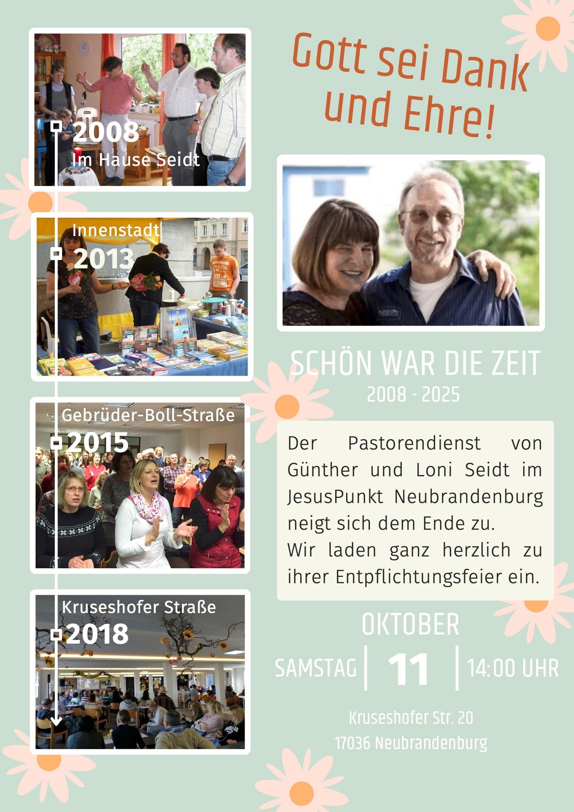
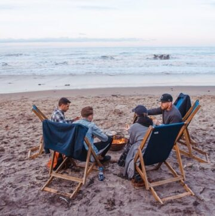

Aktuelle Reihe
Neuanfang
Was, wenn es nie zu spät ist, noch einmal neu zu beginnen? Sechs Sonntage über Hoffnung, Vergebung und den Mut, weiterzugehen.
Zur Reihe →Gottesdienst · Sonntags 10:00 Uhr
Jesus Punkt ist eine evangelische Freikirche – kraftvoll, zeitgemäß und begeistert vom Leben mit Jesus. Komm vorbei, ganz wie du bist.
Veranstaltungen
Der aktuelle Flyer zum Sonntagsgottesdienst und alle weiteren Termine auf einen Blick — für Kinder, Jugend, Familien und alle dazwischen.

Kruseshofer Str. 20 · vor Ort und im Livestream
Für alle zwischen 13 und 29 · Essen, Action, echte Gespräche
In Wohnzimmern in ganz Neubrandenburg
Ein besonderer Sonntag — bring gern jemanden mit
Clip
Du willst wissen, wie sich ein Sonntag bei uns anfühlt? In einer Minute siehst du mehr, als tausend Worte sagen können.

Themen
In unseren aktuellen Reihen greifen wir Fragen auf, die mitten ins Leben treffen — ehrlich, alltagsnah und nah dran an dem, was Jesus uns zu sagen hat.
Aktuelle Reihe
Was, wenn es nie zu spät ist, noch einmal neu zu beginnen? Sechs Sonntage über Hoffnung, Vergebung und den Mut, weiterzugehen.
Zur Reihe →Alte Worte, die heute noch tragen — durch laute und durch leise Tage.
Zweifel ist kein Tabu. Wir reden über das, was sich nicht leicht beantworten lässt.
Predigten
Die letzten Predigten zum Nachhören und Weiterdenken — wann und wo du willst.
Kleingruppen
Glaube wächst im Miteinander. In unseren Hauskreisen findest du Menschen, die mit dir durchs Leben gehen — beim Essen, beim Reden, beim Beten. Über ganz Neubrandenburg verteilt.
dienstags · 19:30
mittwochs · 19:30
donnerstags · 19:30
montags · 19:00
freitags · 20:00
Schreib uns — wir finden die passende.
Über uns
Wir leben, was wir sagen.
Wir sind am Puls der Zeit.
Wir geben Gott unser Bestes.
Wir schaffen eine „Welcome Home“-Atmosphäre.
Die Freude an Gott ist unsere Stärke.
Wir segnen, weil wir gesegnet sind.
Wir lieben Menschen.
Team, Glaube und unsere Geschichte.
Next Steps
Vier Fragen, mit denen du Jesus Punkt in deinem Tempo kennenlernst.
Lern die Menschen hinter Jesus Punkt kennen.
Worauf unser Glaube gegründet ist.
Unsere Vision für Neubrandenburg.
Mach den ersten Schritt — wir freuen uns auf dich.